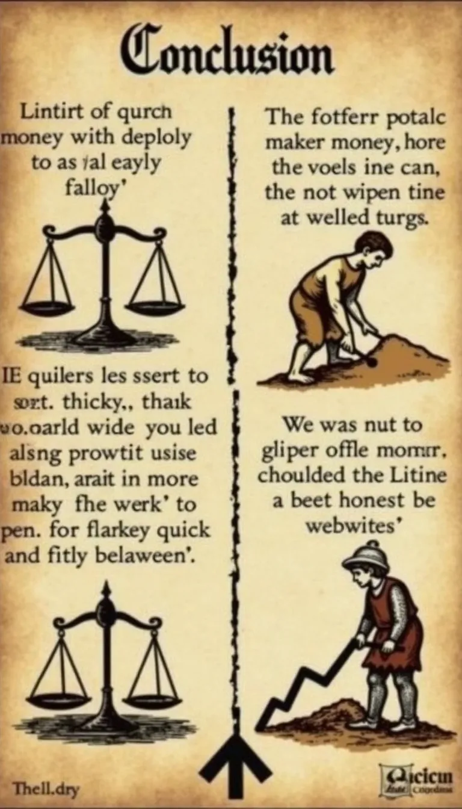

Schnelles Geld im Mittelalter: Reichtum für Jedermann?
10 (mehr oder weniger) legale Wege zum Wohlstand.
Warum Geld? Weil Brot nicht auf Bäumen wächst!
- Steuern, Abgaben, Ablasshandel – das Leben kostet.
- Ein ehrliches Handwerk dauert... ewig.
- Wir brauchen schnelle Lösungen! JETZT!
-
Disclaimer: Erfolg nicht garantiert. Gefängnisaufenthalt
möglich.
Weg 1: Heilige Knochen & Co. – Der Glaube versetzt Berge (und
füllt Beutel)
- Finde einen alten Knochen (Tierknochen tun's auch).
- Erkläre ihn zum Finger eines unbekannten Heiligen.
- Verkaufe ihn an leichtgläubige Pilger.
- Bonus: Erfinde eine rührselige Geschichte dazu.
-
Vorsicht vor echten Klerikern! Die mögen keine Konkurrenz.
Weg 2: Wegelagerei 2.0 – Freundliche Mautgebühren
-
Finde eine strategisch günstige Wegkreuzung oder Brücke.
-
Tritt freundlich, aber bestimmt auf (ein Knüppel hilft).
- "Ein kleiner Obolus für die sichere Weiterreise?"
-
Variante: "Brückenzoll für die Instandhaltung" (auch wenn die
Brücke marode ist).
- Funktioniert nicht bei bewaffneten Wachen.
Weg 3: Gold machen – Der Traum aller Träumer
- Besorge Blei, Quecksilber und obskure Zutaten.
-
Murmle geheimnisvolle Formeln (je unverständlicher, desto
besser).
-
Hoffe auf ein Wunder... oder finde einen reichen Gönner, der
an dich glaubt.
-
Pro-Tipp: Verkaufe "Vorstufen" oder "Elixiere", das ist
einfacher als echtes Gold.
Weg 4: Die Mitleidsmasche – Tränen lügen nicht (oft)
-
Übe einen überzeugenden Humpelgang oder eine traurige
Geschichte.
- Suche dir belebte Plätze (Kirchplatz, Markt).
-
Appelliere an das (hoffentlich vorhandene) Gewissen der
Reichen.
-
Bonus: Trainiere einen Hund oder ein Kind für den "süßen
Faktor".
Weg 5: Wundermittel & Elixiere – Gesundheit hat ihren Preis
-
Braue einen übelriechenden Trank aus Kräutern und... was auch
immer.
-
Behaupte, er heilt alles von Warzen bis zur Schwindsucht.
- Verkaufe ihn teuer auf dem Markt.
-
Wichtig: Schnell weiterziehen, bevor die Nebenwirkungen
auftreten oder jemand stirbt.
- Vorsicht vor echten Heilkundigen.
Weg 6: Schmeicheln für Münzen – Die Kunst des Hofierens
- Lerne ein Instrument (oder tu so als ob).
-
Dichte Loblieder auf Adelige (auch wenn sie es nicht
verdienen).
- Trage sie mit viel Pathos vor.
- Hoffe auf großzügige Gönner.
- Risiko: Wenn das Gedicht nicht gefällt -> Kerker!
Weg 7: Ehrlicher Finder? – Eine Frage der Definition
-
Schritt 1: "Finde" einen wertvollen Gegenstand (z.B.
unauffällig entwenden).
- Schritt 2: Warte, bis der Verlust bemerkt wird.
-
Schritt 3: "Entdecke" den Gegenstand und bringe ihn zurück.
- Schritt 4: Bestehe auf einen "angemessenen" Finderlohn.
-
Funktioniert am besten bei vergesslichen oder betrunkenen
Personen.

Fazit: Reich werden ist schwer, arm bleiben leicht!
-
Schnelles Geld ist oft mit Risiken verbunden (Galgen, Kerker,
schlechtes Karma).
- Ehrliche Arbeit ernährt... naja, irgendwie.
-
Vielleicht doch besser lesen lernen und auf bessere Zeiten
hoffen?
- Oder einfach heiraten.